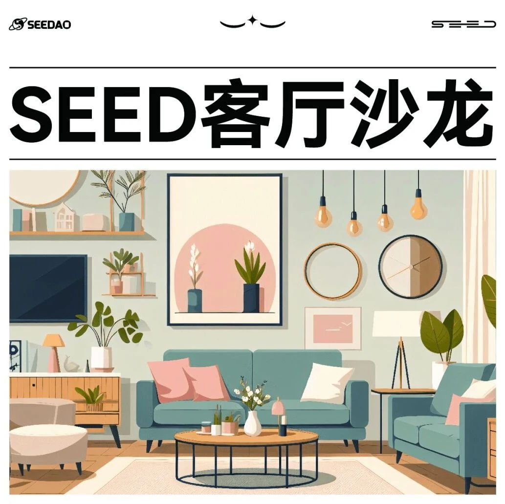

See U in Real Life, See U in Chiang Mai.SEED 客厅沙龙开启报名！

See U in Real Life, See U in Chiang Mai
See U in Chiang Mai
SEED 客厅沙龙介绍12月15日至29日，我们在清迈古城附近订了2栋别墅，组织清迈的SEED co-living。期间我们将举办SEED客厅沙龙分享，邀请SeeDAO成员和伙伴们分享他们的见解和趣闻。我们期待更多的思维碰撞在SEED客厅中产生。以下是我们主要的客厅活动发生地：●Y.E.S Blue villa，SEED客厅沙龙的主要空间● 泳池别墅，不定期举办桌游及共读活动部分活动报名报名链接👉🏻：https://lu.ma/a47l7wd3▶ 12月19日（周二） ”数据权利“工坊地点：Y.E.S Blue villa时间：14:30-15:30组织者：阿森主要内容："Can You Own Your Data? 数字平台如何悄悄掏空你的信息？利用你的个人信息获取巨大利益？随着数字化时代的来临，重新审视个人和平台在数据权的关系尤为重要。随着区块链技术崛起，去中心化的数据管理使个体能够直接掌握和分享数据价值成为可能。让我们一同探讨数字世界的权力边界，揭示数据权背后的未知故事！
报名链接：
https://app.sociallayer.im/event/detail/1747▶ 12月19日（周二） 创作的语言 - 多媒体对话体验地点：Y.E.S Blue villa时间：16:00-18:00组织者：Cascad 有心主要内容：当我们提到“创作”，往往想到的是不同形式的对“语言”的运用。口语无法表达的东西，我们用文字、色彩、声音、行为、影像、和更多的媒体形式来描绘，让他人能感受到你的感受，理解你的体会。于是使用不同的“语言”来与人沟通也许会成为找到自身“创造力”的一种思路。我们基于这个思路设计了这次的共创活动。
报名链接：
https://app.sociallayer.im/event/detail/1752▶ 12月19日（周二）占星工坊地点：Y.E.S Blue villa时间：19:00-22:00组织者：Eliza主要内容：本次SeeDao x Astrowhisper的清迈线下占星工作坊沙龙分享活动，将为大家揭开起源于古巴比伦的西方占星学的神秘面纱！届时我们将分享——西方占星学是什么，解开多年以来被误解的、长期与娱乐星座混为一谈的西方占星学的真实奥义。另外，还有大家都非常感兴趣的与财富相关的话题，以及如何看个人的运势等等的推运技巧等等。欢迎对占星学或神秘学感兴趣的小伙伴报名参加哦！~
报名链接：
https://app.sociallayer.im/event/detail/1748▶ 12.20（周三） 华人中的他者地点：Y.E.S Blue villa时间：19:00-21:00组织者：李阳主要内容：吊诡的是，华人自古以来就是世界移民中的多数群体，但是我们对华人的印象却一直是安土重迁。最近我读了两本书 《他者中的华人》和 《移民与文化》，一起聊聊移民与华人。
报名链接：
https://app.sociallayer.im/event/detail/1749▶ 12.22（周五） 冬至包饺子地点：Y.E.S Blue villa时间：17:00-21:00组织者：Grace（Our Polis 发布会统筹人）主要内容：组织在地数字游民来Blue House一起冬至包饺子！
报名链接：
https://app.sociallayer.im/event/detail/1750
活动组织申请
●主题活动
如果你想在 Y.E.S Blue villa 举办一场小型分享活动，并且希望借助SeeDAO网络邀请社区伙伴参与，可以填写意愿表进行申请：申请链接：https://tally.so/r/3jlA5ESeeDAO将为每场活动的组织者提供5000积分的激励，感谢你为这场活动做出的努力。往期活动👉🏻：See U in Istanbul 客厅沙龙，限时报名